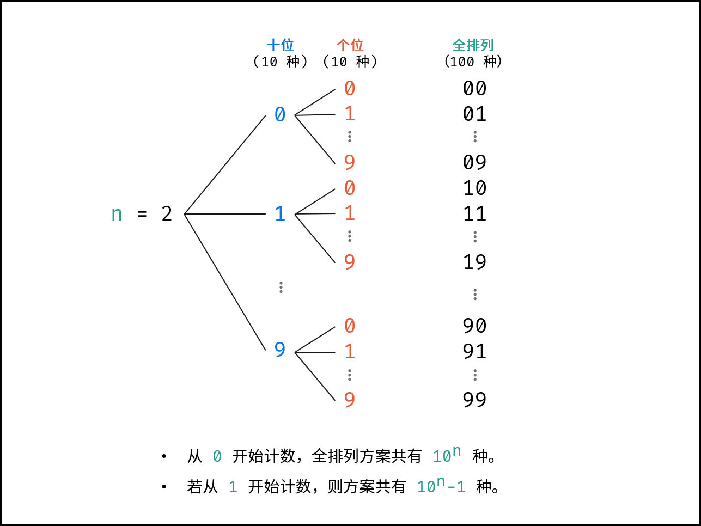

27、剑指 Offer 17. 打印从1到最大的n位数
一、题目
输入数字 n，按顺序打印出从 1 到最大的 n 位十进制数。比如输入 3，则打印出 1、2、3 一直到最大的 3 位数 999。
示例 1:
输入: n = 1
输出: [1,2,3,4,5,6,7,8,9]
说明：
- 用返回一个整数列表来代替打印
- n 为正整数
二、解法
这道题在面试环节时，基本都要考察大数情况的。
2.1、迭代法
核心思路
由于本题要求返回 int 类型数组，相当于默认所有数字都在 int32 整型取值范围内，因此不考虑大数越界问题。
只需定义区间 $[1, 10^n - 1]$ 和步长 1 ，通过 for 循环生成结果列表并返回即可。
复杂度分析
时间复杂度：$O(10^n)$，生成长度为 $10^n$ 的列表需使用 $O(10^n)$ 时间。
空间复杂度： $O(1)$，建立列表需使用 $O(1)$ 大小的额外空间（ 列表作为返回结果，不计入额外空间 ）。
Code
class Solution {
public int[] printNumbers(int n) {
int end = (int)Math.pow(10, n) - 1;
int[] answer = new int[end];
for(int i = 0; i < end; i++) {
answer[i] = i + 1;
}
return answer;
}
}
2.2、大数打印解法
核心思路
实际上，本题的主要考点是大数越界情况下的打印。需要解决以下三个问题：
-
表示大数的变量类型 无论是 short / int / long … 任意变量类型，数字的取值范围都是有限的。因此，大数的表示应用字符串 String 类型。
-
生成数字的字符串集
- 使用 int 类型时，每轮可通过 +1 生成下个数字，而此方法无法应用至 String 类型。并且， String 类型的数字的进位操作效率较低，例如 “9999” 至 “10000” 需要从个位到千位循环判断，进位 4 次。
- 观察可知，生成的列表实际上是 n 位 0 - 9 的 全排列 ，因此可避开进位操作，通过递归生成数字的 String 列表。
- 递归生成全排列
基于分治算法的思想，先固定高位，向低位递归，当个位已被固定时，添加数字的字符串。例如当 n = 2 时（数字范围 1 - 99 ），固定十位为 0 - 9 ，按顺序依次开启递归，固定个位 0 - 9 ，终止递归并添加数字字符串。
{kind=link}
根据以上方法，可初步编写全排列代码：
class Solution {
StringBuilder answer; // 解
int n; // 题目给定的 n
char[] num, charset = {'0', '1', '2', '3', '4', '5', '6', '7', '8', '9'}; // num=缓冲区, charset=字符集
public String printNumbers(int n) {
this.n = n;
answer = new StringBuilder(); // 数字字符串集
num = new char[n]; // 定义长度为 n 的字符列表
dfs(0); // 开启全排列递归
answer.deleteCharAt(answer.length() - 1); // 删除最后多余的逗号
return answer.toString(); // 转化为字符串并返回
}
void dfs(int x) {
if (x == n) { // 终止条件：已固定完所有位
answer.append(String.valueOf(num) + ","); // 拼接 num 并添加至 res 尾部，使用逗号隔开
return;
}
for (char i : charset) { // 遍历 ‘0‘ - ’9‘
num[x] = i; // 固定第 x 位为 i
dfs(x + 1); // 开启固定第 x + 1 位
}
}
}
在此方法下，各数字字符串被逗号隔开，共同组成长字符串。返回的数字集字符串如下所示：
输入：n = 1
输出："0,1,2,3,4,5,6,7,8,9"
输入：n = 2
输出："00,01,02,...,10,11,12,...,97,98,99"
输入：n = 3
输出："000,001,002,...,100,101,102,...,997,998,999"
观察可知，当前的生成方法仍有以下问题：
- 诸如 00, 01, 02, ⋯ 应显示为 0, 1, 2, ⋯ ，即应 删除高位多余的 0 ;
- 此方法从 0 开始生成，而题目要求 列表从 1 开始 ；
以上两个问题的解决方法如下：
-
改造上述实现的 dfs(x) 函数
-
令其成为“dfs(x,n) = 生成长度为 n 的数字字符串，当前正在确定下标为 x 的那一位”，这样可以将不同位长的数值全排列拆分出来。
-
原先的 dfs(3) 要将 1~3 位的数值全排列全部计算出来，改造后将会拆分为 dfs(0,1)+dfs(0,2)+dfs(0,3)。
-
-
在字符集上做文章
- 通过判断 dfs(x,n) 中 x 是否为 0 ，若是，说明当前还在固定下标为 0 的那一位, 即第一位数字（数值的最高位）,此时只需遍历字符集的 ‘1’~‘9’, 反之则遍历 ‘0’~‘9’
通过上述两个步骤，即可解决上述的两个问题。
复杂度分析
时间复杂度：$O(10^n)$，生成长度为 $10^n$ 的列表需使用 $O(10^n)$ 时间。
空间复杂度： $O(10^n)$，结果列表的长度为 $10^n-1$ ，各数字字符串的长度区间为 $1, 2, …, n$ ，因此占用 $O(10^n)$ 大小的额外空间。
Code
为 正确表示大数 ，以下代码的返回值为数字字符串集拼接而成的长字符串。
class Solution {
// 解
StringBuilder answer;
// 字符集
char[] chars = {'0', '1', '2', '3', '4', '5', '6', '7', '8', '9'};
// 缓冲区
char[] num;
public String printNumbers(int n) {
// 结果
answer = new StringBuilder();
// 开启全排列递归
for (int i = 1; i <= n; i++) {
// 定义长度为 n 的字符数组缓冲区
num = new char[i];
// 生成长度为 n 的数字字符串，正在确定下标为 0 的那一位
dfs(0, i);
}
// 删除最后多余的逗号
answer.deleteCharAt(answer.length() - 1);
// 转化为字符串并返回
return answer.toString();
}
// 生成长度为 n 的数字字符串，当前正在确定下标为 x 的那一位（缓冲区 num 的数组下标）
void dfs(int x, int n) {
// 终止条件：已固定完所有位
if (x == n) {
// 拼接 num 并添加至 res 尾部，使用逗号隔开
answer.append(String.valueOf(num) + ",");
return;
}
// 去除前导0：若当前还在固定下标为 0 的那一位, 则说明是第一位数字（即数值最高位）, 只遍历字符集的 '1'~'9', 反之则遍历 '0'~'9'
int start = (x == 0) ? 1 : 0;
for (int index = start; index < chars.length; index++) {
// 固定第 x 位为 i, 对应到缓冲区下标为 x-1
num[x] = chars[index];
// 开启固定第 x + 1 位
dfs(x + 1, n);
}
}
}
本题要求输出 int 类型数组。为 运行通过 ，可在添加数字字符串 s 前，将其转化为 int 类型。代码如下所示：
class Solution {
// 当前已求解数字个数, 作为游标使用
int count = 0;
// 解
int[] answer;
// 字符集
char[] chars = {'0', '1', '2', '3', '4', '5', '6', '7', '8', '9'};
// 缓冲区
char[] num;
public int[] printNumbers(int n) {
// 根据解的已知个数初始化空间
answer = new int[(int) Math.pow(10, n) - 1];
// 开启全排列递归
for (int i = 1; i <= n; i++) {
// 定义长度为 n 的字符数组缓冲区
num = new char[i];
// 生成长度为 n 的数字字符串，正在确定下标为 0 的那一位
dfs(0, i);
}
// 转化为字符串并返回
return answer;
}
// 生成长度为 n 的数字字符串，当前正在确定下标为 x 的那一位（缓冲区 num 的数组下标）
void dfs(int x, int n) {
// 终止条件：已固定完所有位
if (x == n) {
// 将缓冲区的字符串转换为 int , 加入解
answer[count++] = Integer.parseInt(String.valueOf(num));
return;
}
// 去除前导0：若当前还在固定下标为 0 的那一位, 则说明是第一位数字（即数值最高位）, 只遍历字符集的 '1'~'9', 反之则遍历 '0'~'9'
int start = (x == 0) ? 1 : 0;
for (int index = start; index < chars.length; index++) {
// 固定第 x 位为 i, 对应到缓冲区下标为 x-1
num[x] = chars[index];
// 开启固定第 x + 1 位
dfs(x + 1, n);
}
}
}